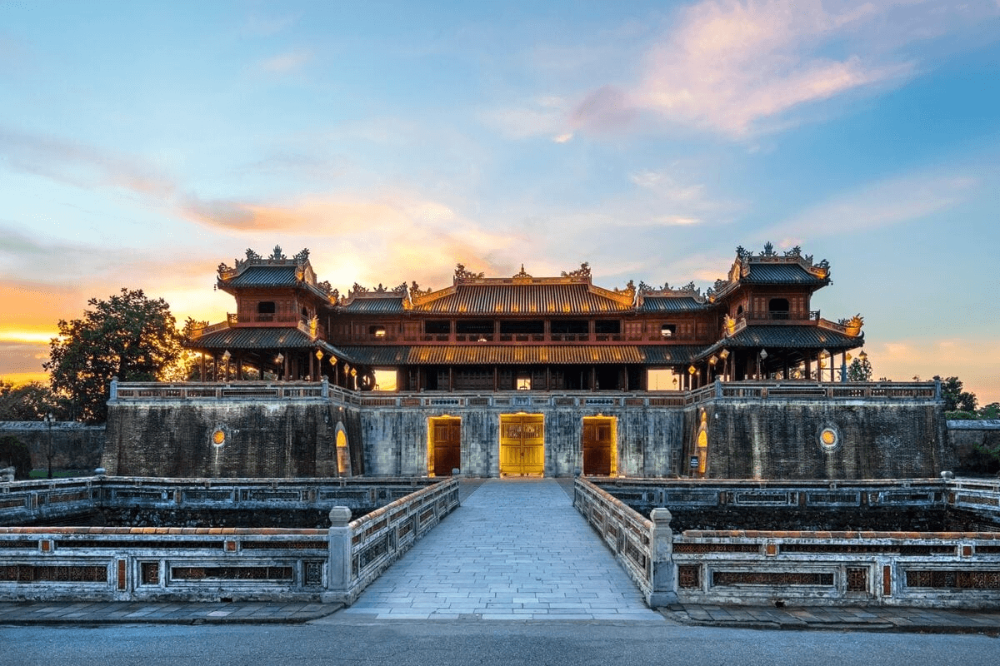
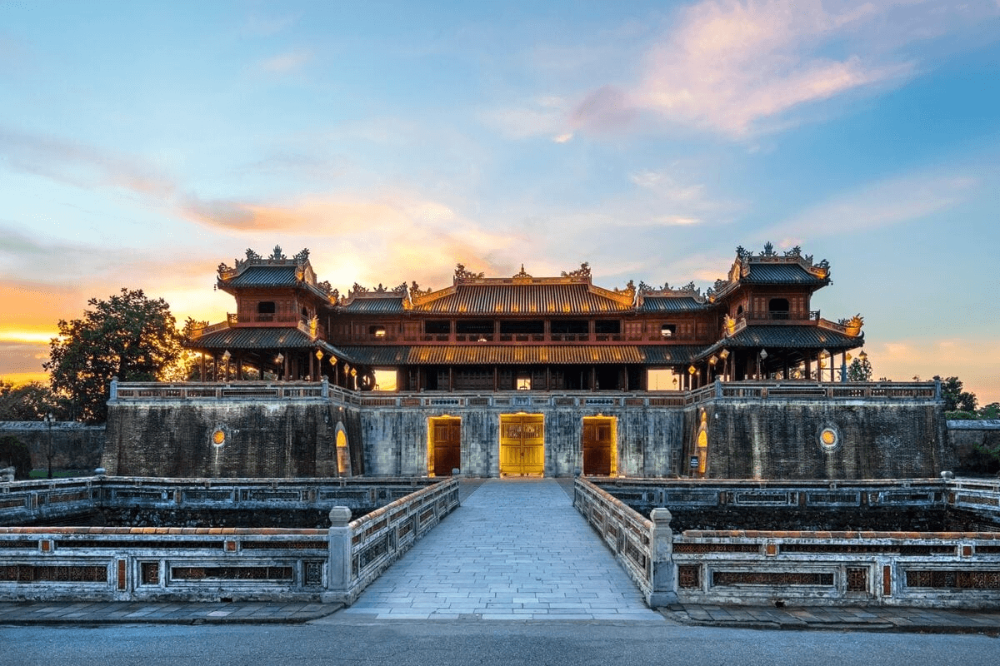
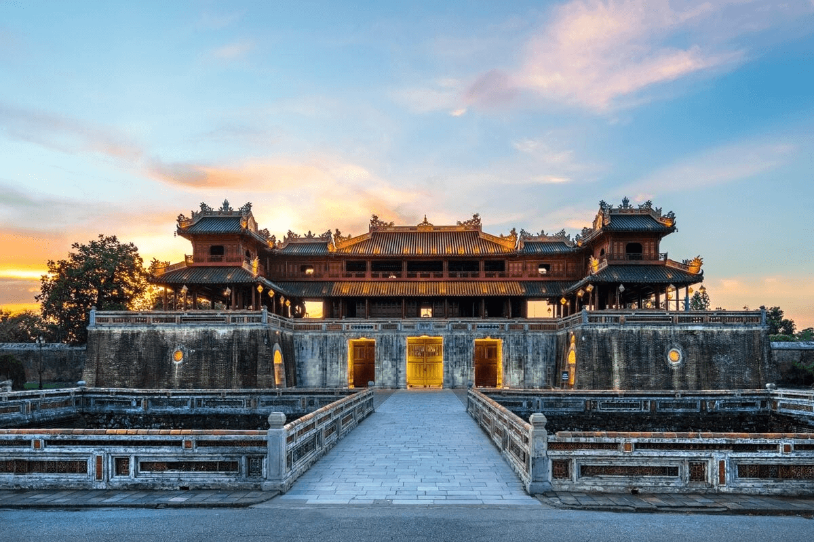
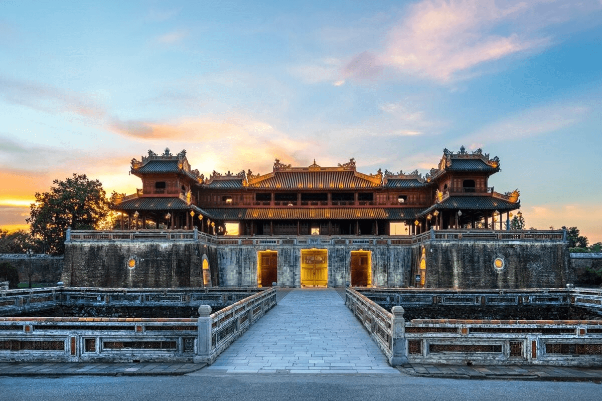

Di sản văn hóa thế giới cổ kính.
Đường lên tiên cảnh Đà Nẵng.
Kiệt tác kiến trúc Chăm Pa.
Vương quốc hang động kỳ vĩ.
Kinh thành vàng son một thuở.
Vương quốc tỏi giữa biển khơi.

Đà Nẵng
Màn trình diễn ánh sáng đẳng cấp thế giới bên sông Hàn.
Huế
Tôn vinh văn hóa di sản, Nhã nhạc cung đình.
Ninh Thuận
Lễ hội lớn nhất của người Chăm tại các tháp cổ.
Ven biển miền Trung
Tục thờ Cá Ông, cầu mong mưa thuận gió hòa.